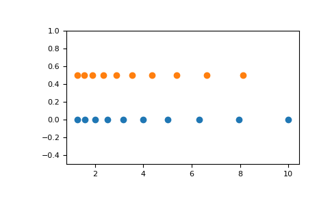

numpy.logspace¶
-
numpy.logspace(start, stop, num=50, endpoint=True, base=10.0, dtype=None)[source]¶ Return numbers spaced evenly on a log scale.
In linear space, the sequence starts at
base ** start(base to the power of start) and ends withbase ** stop(see endpoint below).Parameters: start : float
base ** startis the starting value of the sequence.stop : float
base ** stopis the final value of the sequence, unless endpoint is False. In that case,num + 1values are spaced over the interval in log-space, of which all but the last (a sequence of length num) are returned.num : integer, optional
Number of samples to generate. Default is 50.
endpoint : boolean, optional
If true, stop is the last sample. Otherwise, it is not included. Default is True.
base : float, optional
The base of the log space. The step size between the elements in
ln(samples) / ln(base)(orlog_base(samples)) is uniform. Default is 10.0.dtype : dtype
The type of the output array. If
dtypeis not given, infer the data type from the other input arguments.Returns: samples : ndarray
num samples, equally spaced on a log scale.
See also
arange- Similar to linspace, with the step size specified instead of the number of samples. Note that, when used with a float endpoint, the endpoint may or may not be included.
linspace- Similar to logspace, but with the samples uniformly distributed in linear space, instead of log space.
geomspace- Similar to logspace, but with endpoints specified directly.
Notes
Logspace is equivalent to the code
>>> y = np.linspace(start, stop, num=num, endpoint=endpoint) ... >>> power(base, y).astype(dtype) ...
Examples
>>> np.logspace(2.0, 3.0, num=4) array([ 100. , 215.443469 , 464.15888336, 1000. ]) >>> np.logspace(2.0, 3.0, num=4, endpoint=False) array([ 100. , 177.827941 , 316.22776602, 562.34132519]) >>> np.logspace(2.0, 3.0, num=4, base=2.0) array([ 4. , 5.0396842 , 6.34960421, 8. ])
Graphical illustration:
>>> import matplotlib.pyplot as plt >>> N = 10 >>> x1 = np.logspace(0.1, 1, N, endpoint=True) >>> x2 = np.logspace(0.1, 1, N, endpoint=False) >>> y = np.zeros(N) >>> plt.plot(x1, y, 'o') [<matplotlib.lines.Line2D object at 0x...>] >>> plt.plot(x2, y + 0.5, 'o') [<matplotlib.lines.Line2D object at 0x...>] >>> plt.ylim([-0.5, 1]) (-0.5, 1) >>> plt.show()
